Programmazione - Strategia
All’interno del menù “Programmazione”, la prima voce che comparirà sarà la scheda Strategia, in quanto per definizione costituisce la prima fase del processo di programmazione. La scheda Strategia è accessibile da tutti gli utenti, sia dall’utente generico che avrà modo di visualizzare la pagina con la vision aziendale e la definizione della strada da perseguire per raggiungere determinati obiettivi sia dall’utente responsabile di CdR o da coloro appartenenti a CdR che eseguono la programmazione strategica che avranno quindi la possibilità di contribuire/modificarne i contenuti (Fig.1).
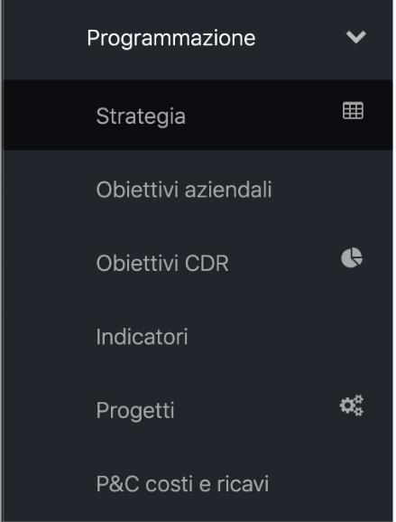
La prima sezione della pagina presenterà un’introduzione con cui si espliciteranno i contenuti "attesi" in ordine alle diverse prospettive definite e rispetto alle quali dovrà essere articolata la strategia aziendale e di CdR.
L’utente Responsabile di un CdR di programmazione strategica accedendo alla scheda Strategia visualizzerà la sezione introduttiva, la sezione contenente la strategia di propria competenza (modificabile nell'intervallo di date definite dall'amministratore) e la sezione contenente le Strategie definite da tutti i CdR di livello superiore. Il Responsabile di un CdR di programmazione strategica sarà chiamato a definire e proporre la strategia da attuare all’interno del proprio CdR, articolandola secondo le “prospettive strategiche” valide per l’anno di budget, garantendo la coerenza con le strategie definite dai propri superiori gerarchici e del vertice strategico. Per farlo dovrà cliccare, accedendo direttamente agli editor di testo disponibili per le singole "prospettive strategiche" modificabili, solo ed esclusivamente, da questo tipo di utente.
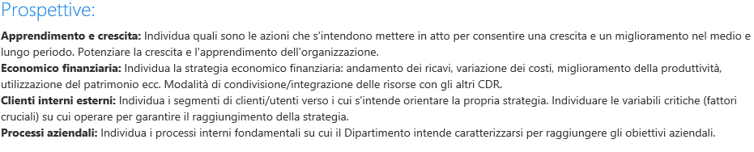
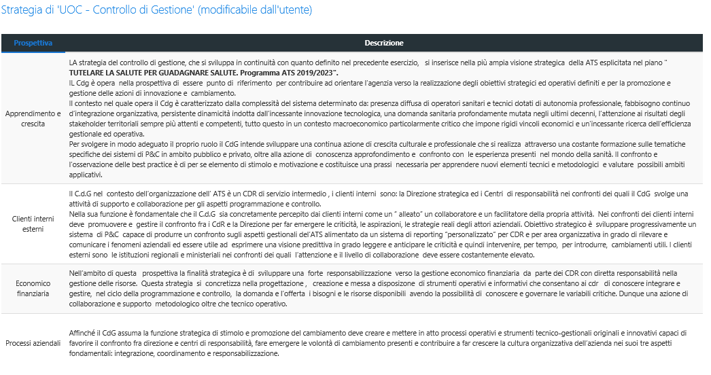
In fondo alla pagina sarà presente una tabella, non modificabile, con riportato un riepilogo delle strategie definite dai padri gerarchici.
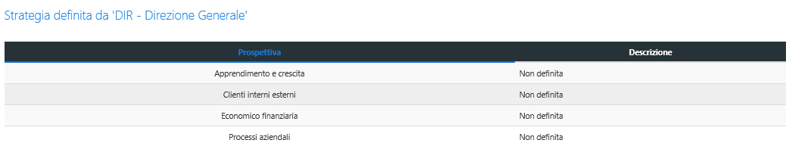
L’utente generico, accedendo alla scheda “Strategia”, visualizzerà la sezione introduttiva, se definita per l’anno di budget, e tutte le strategie definite da tutti i padri gerarchici di afferenza dell’utente, se tali padri gerarchici sono stati individuati quali CdR di programmazione strategica. L’utente amministratore, infine potrà accedere alle tabelle di supporto per la definizione e la modifica delle prospettive da utilizzare per i singoli anni di budget.
Strumenti di amministrazione
All’interno del menù Programmazione, a lato della voce “Strategia” sarà visibile e cliccabile per l’amministratore di sistema l'icona per accedere alla sezione per la gestione delle tabelle di supporto (Fig. 5).
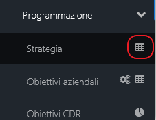
Accendo alla tabella, si aprirà una nuova pagina (Fig. 6), contenente diversi TAB (Data chiusura; Descrizione introduttiva; CdR programmazione strategica; Prospettiva strategica) che consentiranno di configurare/modificare la pagina principale del modulo "Strategia".
Il primo pannello a disposizione dell’amministratore è quello relativo alla "Data Chiusura" (Fig.7) in cui sono riportati gli anni relativi alla definizione della Strategia e pertanto la loro apertura/chiusura con la possibilità di aggiungere nuovi anni (mediante il tasto “+Aggiungi”, Fig. 8) o eliminarne, laddove non utilizzati mediante l’icona “Cestino”. Le azioni di modifica/eliminazione dei dati sono inoltre possibili, cliccando direttamente su uno degli anni già inseriti e accedendo quindi ad un’ulteriore finestra di ricapitolo dei dati (Fig. 9).
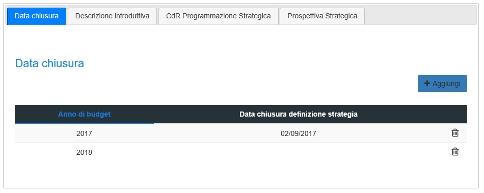
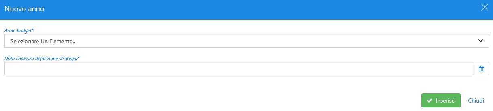
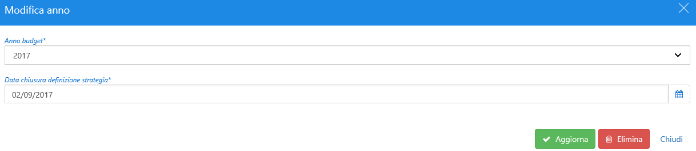
A seguire è presente il pannello relativo alla "Descrizione introduttiva" (Fig. 10) in cui è possibile inserire il testo che verrà visualizzato da tutti gli utenti all’interno della pagina principale del modulo. Anche per questa sezione, gli attributi sono storicizzati e sarà possibile inserire nuove descrizioni con il tasto “+Aggiungi” o cancellarle attraverso l'icona “Cestino” oppure, cliccando sul singolo item esistente, aggiornare ed eliminare dati (Fig. 11).
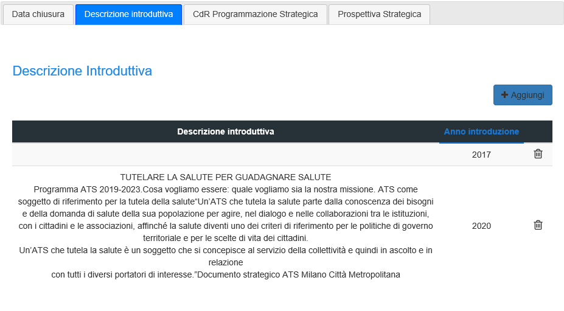
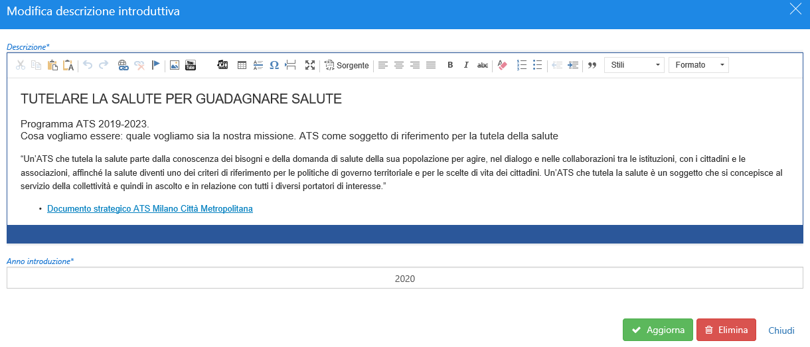
Nel Pannello "CdR Programmazione Strategica" (Fig. 12) vengono definiti e visualizzati i CdR abilitati a questo tipo di attività. Al suo interno, come per i precedenti casi, possono essere sempre compiute le azioni di aggiunta, aggiornamento ed eliminazione di eventuali record, sia direttamente dalla maschera proposta sia accendendo ad ogni singolo CdR già inserito(Fig. 13).
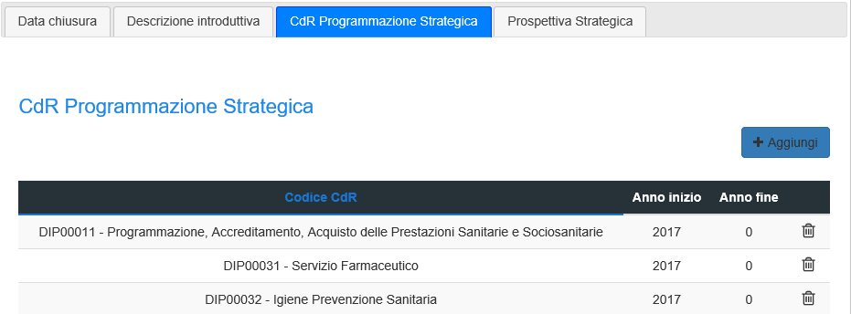
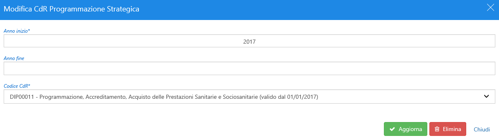
Infine in "Prospettiva Strategica" (Fig. 14) sono definite le prospettive che verranno visualizzate nella scheda dei singoli anni definiti e la relativa possibilità di modifica o eliminazione delle stesse, sia attraverso l’icona Cestino presente nella pagina che si sta visualizzando sia tramite clic sull’item prescelto, accedendo alla pagina di dettaglio (Fig.15).
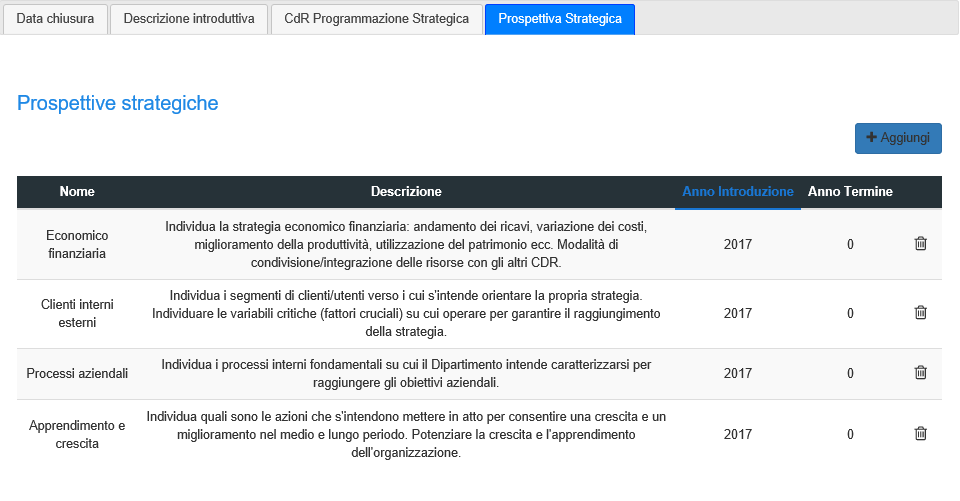
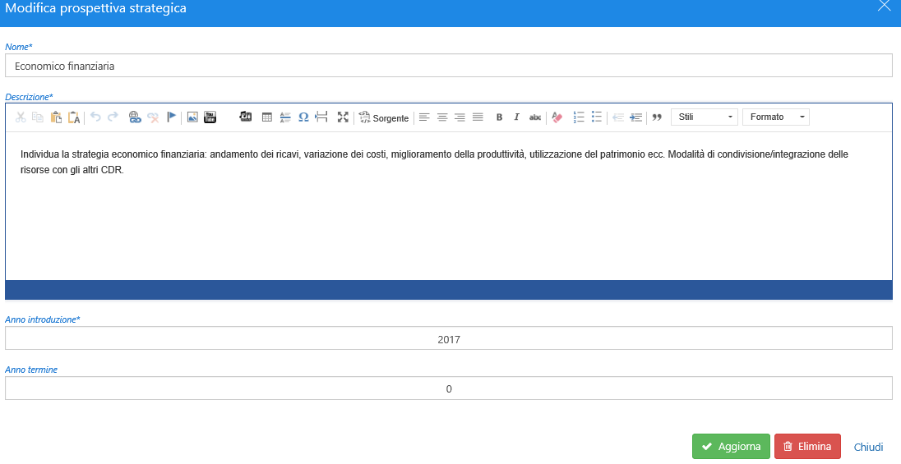